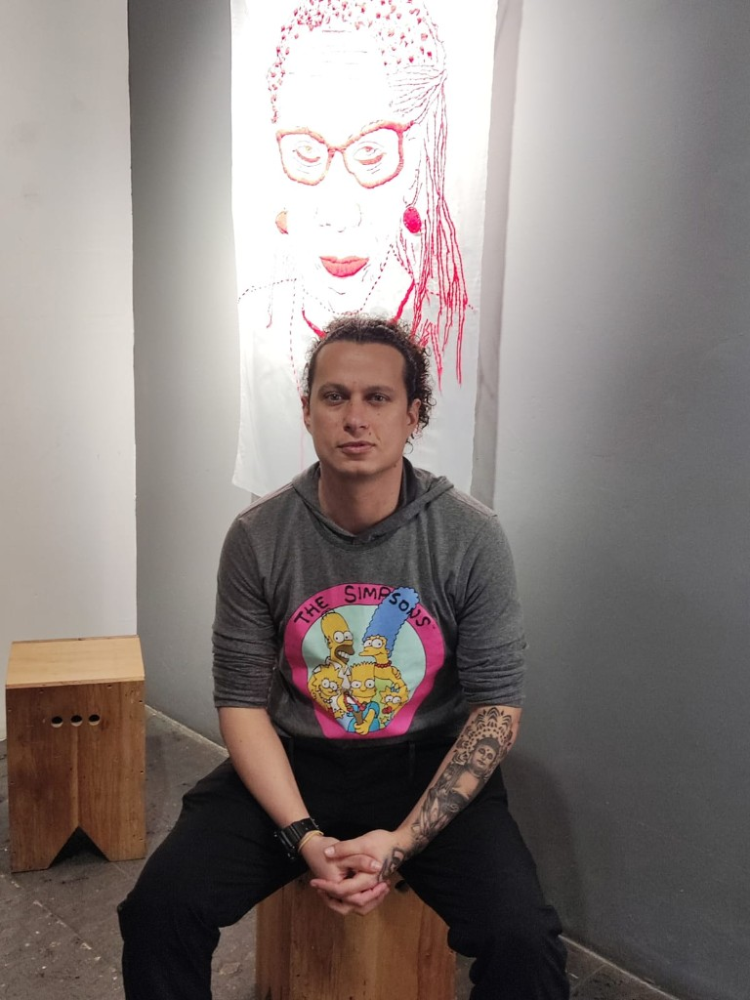
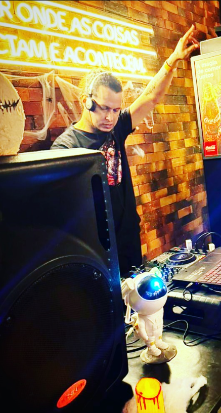

Arquivo ? ago 2022
Fora da cabine
Selfie de praia. Serve para a marca não viver só de cartaz escuro: há luz de dia, cidade e litoral perto de Curitiba no imaginário.
Trajetória
DJ Diplomata mora em Curitiba e oferece o set para as festas da capital. Esta página separa o que a foto prova do que a campanha propõe. Ano de carreira e residência fixa só entram quando houver post, contrato ou nota do próprio artista.


Arquivo ? ago 2022
Selfie de praia. Serve para a marca não viver só de cartaz escuro: há luz de dia, cidade e litoral perto de Curitiba no imaginário.
Arquivo ? jan e ago 2023
Retrato sentado, cabelo preso, tatuagem no braço, fundo de bordado vermelho. É a foto de imprensa principal. O criativo de campanha nasce dela, com moletom liso.
Cabine
Fone, mesa e a mão no alto. É a imagem que abre o site. O cenário de fundo, com neon e tijolo, fica como registro, sem transformar placa de bebida em patrocínio.
Cidade
Noite de estádio. Entra na galeria como vida fora do club, não como parceria com clube de futebol.
2026 ? campanha
A LP é o próximo capítulo público. Título de trabalho, capa em selo, lista de espera. Distribuição ainda não confirmada.
DJ de Curitiba. Toca em festas da capital e da região. Formatos: club, open air, after e evento privado. Press kit com foto real e criativo marcado. LP Credenciais em campanha.
Não inventar anos de carreira, residência fixa, cachê, telefone ou número de seguidores. Não colar o nome em line de outro artista. Não tratar homônimo de SoundCloud como canal oficial antes de confirmação.